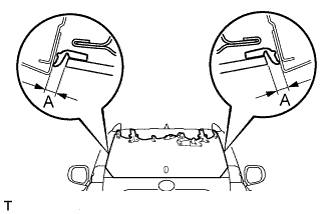
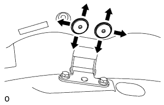
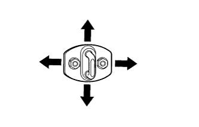

BACK DOOR GLASS > ADJUSTMENT |
| 1. INSPECT BACK DOOR GLASS |
|  |
Check that the clearance measurements of the areas labeled A are within the standard range.
| Area | Specified Condition |
| A | 5.05 to 8.05 mm (0.199 to 0.317 in.) |
| 2. ADJUST BACK DOOR GLASS |
|  |
Using a T30 "TORX" wrench, loosen the bolts on the hinge and adjust the position of the back door glass.
Using a T30 "TORX" wrench, tighten the hinge bolts on the back door glass after the adjustment.
|  |
Adjust the striker position by slightly loosening the striker mounting nuts and tapping the striker with a plastic-faced hammer.
Tighten the striker mounting nuts after the adjustment.